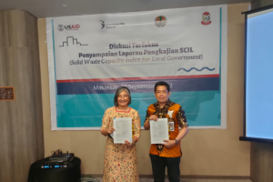

BERITARapat Progres Pekerjaan dengan Tetra Tech
Rapat progres Pekerjaan Tetra
Tech
2 November 2022 | Admin CoT

Ketua COT,Dr,ENG.Ir.Nasruddin Yunus,M.T. bersama dengan dengan perwakilan Dinas Pemuda dan Olahraga Kota Makassar.
Kamis, 22 September 2022 bertempat Hotel Mercure Makassar, Kepala Pusat Unggulan Teknologi Center of Technology (PUSLANTEK-CoT) Fakultas Teknik Universitas Hasanuddin, Dr. Eng. Ir. Nasruddin, ST, MT bersama tim peneliti melakukan pertemuan dengan pihak Tetra Tech Indonesia.
Pertemuan ini dimaksudkan dalam rangka pembahasan kegiatan yang dikerjasamakan oleh Tetra Tech Indonesia dengan PUSLANTEK-CoT.
Berita Lainnya